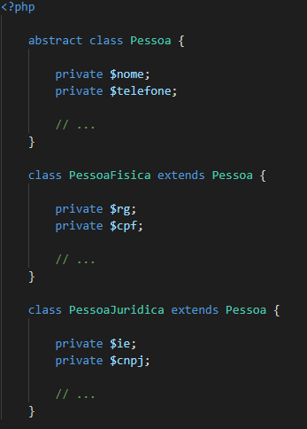
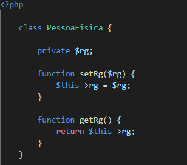
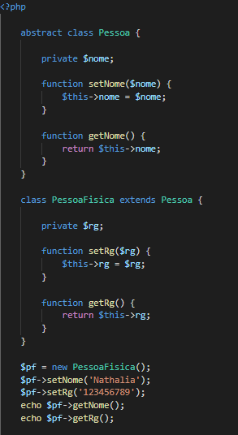
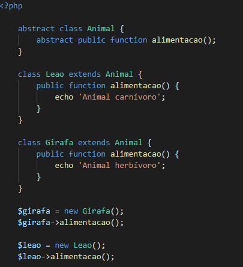
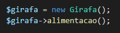
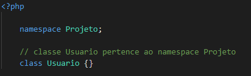
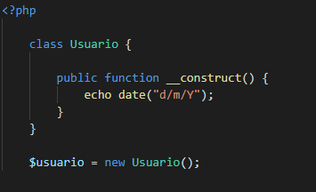

4 pilares da Programação Orientada a Objetos:
É responsável por definir um modelo para que outras classes possam seguir. Exemplos:
Forma de pagamento -> Cartão, transferência, dinheiro;
Animais -> Elefante, girafa, leão;
Pessoa -> Física e Jurídica.
No exemplo abaixo, as classes PessoaFisica e PessoaJuridica estendem da classe abstrata Pessoa. Sendo assim, além de PessoaFisica ter acesso aos seus próprios atributos, terá acesso aos atributos da classe abstrata Pessoa. O mesmo acontece com a classe PessoaJuridica.
NOTA: A palavra chave private indica que esse atributo só poderá ser manipulado apenas dentro da própria classe.
Utilizando protected, o atributo pode ser manipulado na superclasse e subclasse. Com public, o atributo pode ser manipulado a partir de qualquer classe. Exemplo:
Esse pilar deve garantir a segurança dos dados que estão dentro de uma classe, para que suas variáveis sejam manipuladas apenas por seus métodos, e nunca diretamente. Como em:
Para criar uma nova classe (também chamada de subclasse) baseada em uma já existente (superclasse). Dessa forma, a subclasse herda as características da superclasse sem a necessidade de duplicar o código.
No exemplo acima, vemos que a classe PessoaFisica herdou os métodos da superclasse Pessoa (setNome e getNome). Não se preocupe se não entender completamente o código. Logo entraremos em detalhes sobre a palavra chave new.
Esse pilar nos permite sobrepor a funcionalidade de um método da superclasse na subclasse. Nesse exemplo, o método alimentacao teve sua funcionalidade sobreposta. Além disso, ao estender uma superclasse que contenha um método abstrato, somos obrigados a implementá-lo na subclasse.
Classes: Conjunto de atributos e métodos especificará um objeto.
Objetos: O objeto é resultado da instância de uma classe quando utilizamos a palavra reservada new.
Namespaces: Funciona como um agrupador de classes, a fim de organizar e evitar conflitos com os nomes dos arquivos dentro do projeto. Assim podemos ter arquivos com o mesmo nome em diretórios diferentes, mas nunca no mesmo. Exemplo:
Método construtor: O método construtor é chamado de forma implícita logo após a classe ser instanciada.
